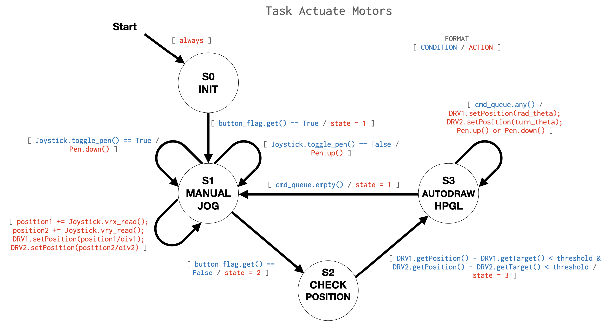
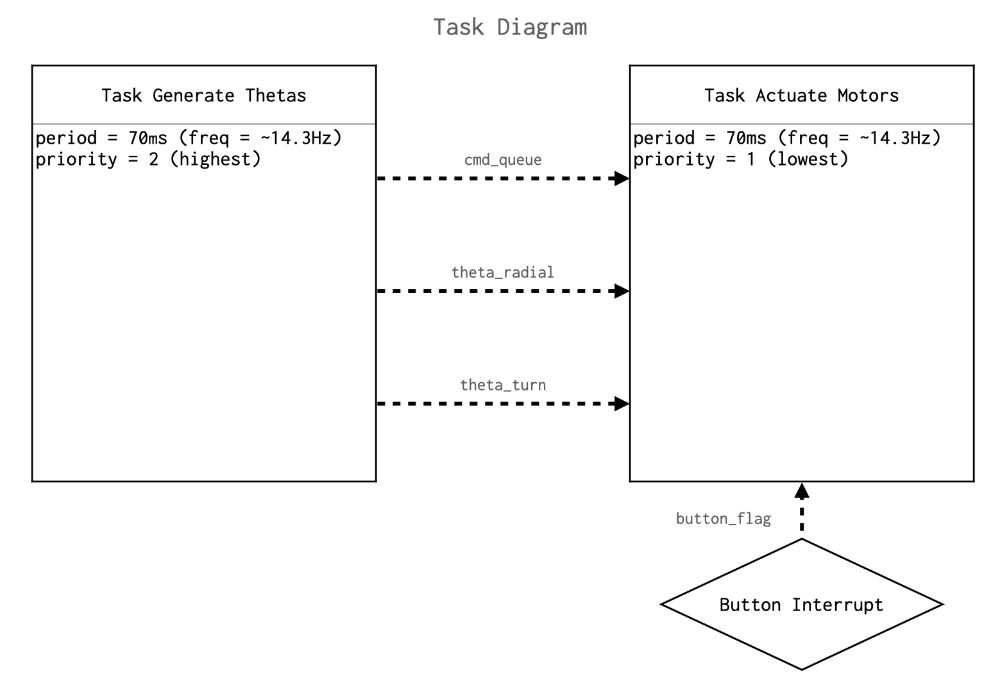
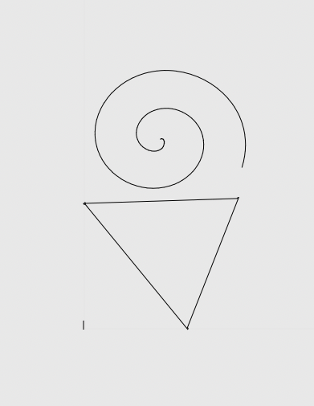
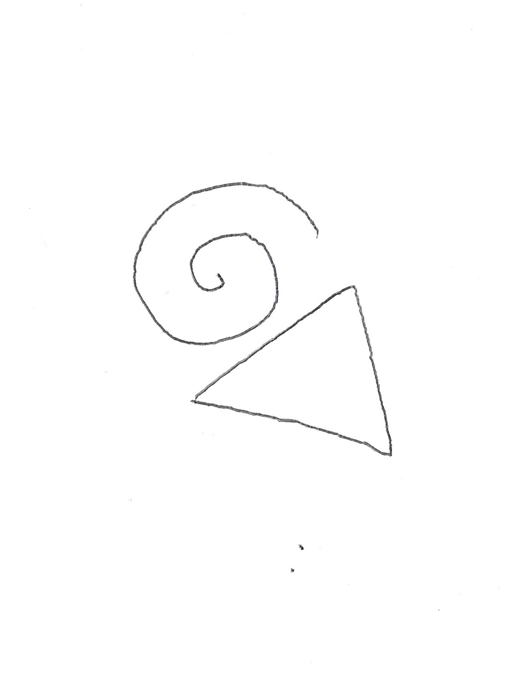

The goal of this project was to design, build, analyze, and program a plotter robot capable for drawing an image. The requirements for this project were as follows:
The robot must be capable of drawing both rectilinear and curved shapes.
The program must autonomously reproduce images using data exported from a drawing software such as Inkscape .
Uncoupled x-y coordinate systems are off limits; the robot may not operate in a simple Cartesian coordinate system.
The program controlling the robot was written in MicroPython and successfully run with consideration for the memory and processing capabilities of the provided microcontroller, an STM32L476 Nucleo.
The robot must use stepper motors to control the position of the chosen drawing device.
The drivers used to control each stepper motor will be a provided Trinamic TMC4210 and TMC2208 pair.
Interaction with these drivers must be performed using serial peripheral interface (SPI) communication.
Each team must write their own Python stepper driver class for control of their motors via the Trinamic drivers.
The drawing program must utilize the cooperative multitasking scheduler from the cotask.py Python script provided courtesy of Professor Ridgely.
The project must include at least one additional feature or functionality of the team’s choosing. This could be an analog joystick for manual operation, LED indicators which reflect the status of the device, an LCD display, etc.
Throughout the design process, intermediate tasks were assigned and evaluated to guide the firmware development. Computer aided design (CAD) and construction of the drawing mechanism was conducted independently by the team and evaluated via simple progress checks.
Our team chose to design a robot that operates in a polar coordinate system. The radial component of this motion is produced by a ball screw linear actuator. The angular component of this motion is produced by direct drive of a turntable which also serves as the drawing surface for the device. The drawing tool used is a simple Bic ballpoint pen which is modified with a spring. This pen is actuated using a linear actuator containing a 12V DC motor, internal gearbox, and lead screw.
Figure 1 depicts the robot in its final iteration.
Figure 1. Final iteration of robot build.
Hardware Development
Robot Concept
As a requirement of this project, we were unallowed to pursue a robot that use a Cartesian coordinate system, meaning the plotting schematic could not resemble a system where an origin is defined by two perpendicular axes and points are defined as a pair of signed values relative to this origin. This eliminated the gantry-style robot concepts commonly seen in many industrial automation machines, like CNC mills and 3D filament printers. After exploring concepts, we decided upon a machine utilizing a polar coordinate system, where position is defined by a radial distance and an angle value from an origin. There were a few fashions a polar coordinate system could be implemented. We decided to use a rotating turntable to control the angular degree of freedom and a screw mechanism to control the radial direction of freedom.
Figure 2 captures a rough sketch of our concept.
Figure 2. Preliminary sketch of robot.
After deciding upon a conceptual direction, we pursued material selection and detailed design of the robot.
Procurement & Detailed Design
Prior to detailed design, we scavenged for materials utilizing machine shop scrap and our personal project supplies. We found ample 1” by 1” and 2” by 1” 80/20 aluminum extrude in the Mustang 60 machine shop scrap for the structural build. Jarod found a linear actuator in his Arduino kit to serve as a pen actuator. This linear actuator utilizes a 12V brushed DC motor, a geartrain, and a lead screw to convert from the mechanical rotational domain to the linear mechanical domain. The linear actuator has built in limit switches to control limits of extension and retraction, avoiding burn out of the DC motor. After gathering initial materials, we pursued other material purchases to enhance our project. Approximately sizing our robot to draw on 8.5” by 11” paper, we order a 350mm ball screw kit and 300mm linear guide rail. Additionally, we decided to invest in our own NEMA 17 motors. Table 1 shows the final bill of materials for this project.
Table 1. Final bill of materials.
With our materials chosen, we proceeded to perform detailed design, jumping straight into CAD modeling. Firstly, we modeled our frame in 80/20 aluminum extrude. We decided the best methods of joining would include the use of T-slot nuts and some custom brackets to avoid the absurd cost of 80/20 brackets. We chose that we would make the table out of laser cut MDF or plywood – which ever was more readily accessible. The table mounts atop a square turntable (lazy susan) bearing.
Figure 4 shows the general CAD model of our frame and drive train design.
Figure 4. Alternate isometric view of CAD model.
We designed to direct drive the ball screw and table of our design with flexible coupling connections. Parallel and opposite the ball screw, a linear rail provides a secondary support for the pen mounting and carriage.
Figure 5 shows the detailed pen carriage mechanism that houses the pen and linear actuator. This pen carriage spans between the linear rail and ball screw, bolting to the respective faces of both.
Figure 5. CAD model of pen carriage.
The eyehole end of the linear actuator connects to the pen by a bracket. Since the pen does not extends the pen/actuator carriage maintains axial fixation of the pen with a slip fit between the shaft of the pen.
With detailed design of our machine in place, we proceed to manufacture our robot. Between our CAD model and manufacturing, a few iterations were made on the fly. As such, our CAD model does not precisely reflect our final mechanical assembly, but demonstrates general concept and sizing. We knew there would be a few unique parts that would require some machine time.
Manufacturing
Pulling dimensions from CAD, we cut all 80/20 extrusions to size and milled the ends to final length. We machine and waterjet brackets from aluminum plate for joining the 80/20 extrusion. The video below shows waterjet of those brackets.
Figure 6 shows an early iteration of our robot build.
Figure 6. Early iteration of robot build.
Using the Prusa i3 MK3S+ printer in Mustang 60, we 3D-printed the many parts with complex geometries – the actuator carriage, table locating pins, table mount bracket, and pen mount bracket. Upon initial assembly, we had difficult aligning the concentricity of the turntable motor shaft with that of the square turntable bearing. First, we tried to off board the motor and make up for any play in concentricity with a belt driven mechanism. However, belt tensioning was difficult to tune, and deflection of the table pulley was significant.
Figure 7 shows our attempt at a belt and pulley drive system.
Figure 7. Attempted belt and pulley drive of turntable.
Ultimately, we resolved the concentricity by locating the table on the bearing with pins and adding a self-locating flange for connection to direct drive with the motor. A flexible coupling made up for any concentricity or out-of-plane issues seen between the motor and the turntable.
The laser cutter was used for making our drawing board. We engraved a polar coordinate scheme on the drawing board, which we used for calibrating our motors and referencing pen location on the board. Pins and flange locating holes were laser cut into the table. Figure 8 shows an iteration of the board. This was not the final table, however, as one of the locating pin holes was wrongly dimensioned.
Figure 8. Laser cut drawing table.
Lastly, we mounted our electronics atop our upper rail using some acrylic sheet and M3 brass studs as depicted in Figure 9.
Figure 9. Electronics mounted on robot.
Ultimately, after working through our manufacturing issues, we achieved a successful mechanical build.
Figure 10 shows our final mechanical build.
Figure 10. Final iteration of robot build.
The video below explains our mechanical build and mechanisms in there final form.
Electronics Assembly & Wiring
We needed to prepare several items of hardware for programming including the motor driver boards, the motors, and the connection between our peripheral and controller.
To assembly our motor driver board, we soldered the provided wire-to-board headers, pin headers for the TMC2208 motor drivers, male pin adapters, and capacitor using the Hakko irons and 67-Sn / 37-Pb composition, flux-core solder provided in the mechatronics lab.
The TMC4210 drivers and other related surface-mount hardware were already reflowed onto the board.
Figure 10. Solder joints on the backside of motor driver hardware.
After soldering the board components, we installed the TMC2208 stepper driver modules in the appropriate pin headers. The Trinamic TMC2208 stepper driver is designed to power 2-phase bipolar stepper motor drivers. The Trinamic TMC4210 performs real-time critical tasks for integrated ramp motion profile generation. Together, the TMC4210’s motion control capabilities and TMC2208’s power management provide the hardware needed for smooth stepper control.
Figure 11 labels the assembled motor driver board. As annotated, there are two sets of TMC2208 and TMC4210 chipsets, each dedicated to individualized control of two stepper motors.
Figure 11. Assembled motor driver board designed to accommodate two, two-phase bipolar stepper motors.
After assembling the motor driver board, we set the reference voltage on the motor driver, which defines the scaling of the motor current. The board was connected to a 12V power supply with 0.5A current limiting on.
As seen in Figure 12, we used a voltmeter to monitor the DC voltage between the Vref pin and ground on the TMC2208. The small screw-head potentiometer was dialed until we achieved a reference voltage near 0.7V. Setting the reference voltage to around 0.7V provides linear scaling of the motor current as appropriately determined by the TMC2208 driver.
Figure 12. Measuring and setting Vref of TMC2208.
After assembling the motor driver board, we set the reference voltage on the motor driver, which defines the scaling of the motor current. The board was connected to a 12V power supply with 0.5A current limiting on.
As seen in Figure 13, we used a voltmeter to monitor the DC voltage between the Vref pin and ground on the TMC2208. The small screw-head potentiometer was dialed until we achieved a reference voltage near 0.7V. Setting the reference voltage to around 0.7V provides linear scaling of the motor current as appropriately determined by the TMC2208 driver. Since our motors are rated for 1.5A, later we increased the current limit of our power supply to 1.2A and our voltage reference to 1V.
With the motor driver board assembled and the reference voltage set on each TMC2208, we connected our motor, power supply, Nucleo, and motor driver board. Figure 14 captures the general wiring schematic for our system. The power supply provides a specified current and voltage – in our experiment, a voltage of 12VDC and a max current of 0.5A – that is regulated by the TMC2208 and powered into the stepper motor according to ramp motion profiles determined by the TMC4210. The power supply connected to the motor driver board via two power leads that screw into the wire-to-board header. The 12V signal enters the MVIN port and the ground wire enters the GND port of the motor driver header. Voltage and current are appropriately set on the power supply. The Nucleo L674RG board is not shown to simplify our wiring diagram. If it were model, the Nucleo mounts atop the right-side and left-side headers of the Shoe of Brian and is connected to our computer serially by a USB-B to USB-A cable.
Figure 13. Wiring diagram for stepper motor control system. Note, the Nucleo L476RG board is omitted to make the pinouts of the Shoe of Brian visible. The Nucleo mount atop the pin headers on the left and right sides of the Shoe of Brian.
We wired the motor driver board to the Shoe of Brain. The Shoe of Brian interfaces to the STM32 pins on the Nucleo L476RG, providing access to critical pinouts on the STM32 such as clock pins, MOSI, MISO, and the serial clock via a wire-to-board header.
Figure 14 label connections from the Shoe of Brian to the motor driver board, which lead into the TMC4210’s. With serial peripheral interface, we need master-input, slave-output (MISO), master-output, slave-input (MOSI), serial clock, and chip select data lines to communicate data packets.
Figure 14. Data lines from the Shoe of Brian to the motor driver board.
Table 2 provides tabulation of the data line connections from the Shoe of Brian to the motor driver board with color coding that matches Figure 14.
Table 2. Pin Wiring from the Shoe of Brian to the male pins on motor driver board.
We purchased stepper motors for use in our term project. As such, we thought it best to perform testing and prove out our motor driver using the purchased motors. Figure 15 details the specifications of the Nema 17 motors we chose. From research, these seemed to be well-received, mid-range performance, 2-phase bipolar stepper motor suited for the likes of our application.
Figure 15. Motor specifications.
Before interfacing with the motor driver board, we cut the wire harness of the four leads (two leads per phase) and crimped leads onto the end of the wirings. Figure 17 shows the result of this.
Figure 16. Motor phase lead wire crimp-on terminals.
Once we prepped the motor phase leads, we connected our motor to our motor driver board via the wire-to-board header.
Figure 17 shows how we connected our motor leads to the board. The phase polarities were provided by the specification sheet of our NEMA 17 steppers. The header board labeling for stepper motor leads has a numeral indicator (1 or 2) describing the phase and a letter indicator (A or B) indicating the phase polarity. Consistency of phase polarity connection to the board is critical for proper motor operation.
Figure 17. Motor wiring to motor driver board terminal.
After wiring the hardware-side of our motor driver system, we were ready to develop and test implementation of a motor driver class. Figure 18 shows the final assembly of our motor driver hardware. We repeated this for our second NEMA17 using the additional set of headers on the motor jumper board.
Figure 18. Wiring from STM32L476 to the motor.
-->
Analysis
We performed critical kinematic analysis to describe the drawing motion of our robot. To do this, we used a the
Newton-Raphson iterative solver to determine solutions to the forward kinematics of the robot. Hand calculations and
our initial solver can be found in the following link: Newton-Raphson Solver.
Kinematic Simulation through a Newton-Raphson Solver
From this setup, the system kinematics are analyzed by establishing uncoupled x- and y-coordinate equations representing the polar-to-Cartesian coordinate transform of the simplified schematic actuator "arm" vector. This yields the matrix equation
Taking the Jacobian of the vectorized form of
yields a conversion matrix between our motor actuation angles,
and and the corresponding Cartesian coordinates of the plotting pen tip, and .
Using this Jacobian, we can set up a Newton-Raphson iterative solver of the form
Upon passing the desired input vector (containing the desired and Cartesian coordinates) into the solver, along with an initial guess value for theta, the minimization function
the Jacobian of the system (or a function which computes it), and the acceptable error for a given solution, the solver will compute the associated vector
containing and motor actuation angles required to achieve that position.
Figure 19. Schematic representation of the polar plotter. Using a turntable and linear actuator effectively gives the robot radial and angular degrees of freedom. Therefore, the abstracted drawing arm can be represented by a vector (orange) starting at the coordinate frame origin and extending some radial distance r at a rotated angle ùúÉ. Note: units are in [mm].
Firmware Development
In parallel with our hardware build, we programmed the classes and tasking we would need for robot controls.
Stepper Driver
As part of this project, our team was tasked with writing our own stepper motor driver class to interact with the TMC4210 and TMC2208 stepper driver hardware. Using information from the Trinamic datasheet for this hardware, we developed a class diagram to plan out the design of this stepper driver. This diagram lays out basic movement parameter setting methods to streamline actuation of the motors from within the program main script. Aside from basic functionality, the INIT() method of this class simply sets the required parameters as required for this application.
To drive motors with this hardware, there are several driver settings which must be properly configured first. To begin, we attempted simple reading of the TYPE_REGISTER register address which contains a default value so the user can confirm that serial communication with the device is properly configured. With this initial check completed, our team proceeded to test writing settings for the following driver parameters required to set up the device:
en_sd – The enable step/direction register. This setting enables the TMC4210.
V_MIN and V_MAX – The velocity limit registers. These set the velocity limits of the motors being driven by the TMC4210.
PULSE_DIV and RAMP_DIV – A shared register address for two parameters. PULSE_DIV scales the velocity parameters of the motor. RAMP_DIV scales the acceleration parameter A_MAX.
A_MAX – The absolute value of the desired maximum acceleration for the velocity mode and ramp mode operating modes.
PMUL and PDIV – The deceleration ramp calculation parameters. These values are calculated based on the A_MAX, PULSE_DIV, and RAMP_DIV settings of the driver. To ensure a valid set of these five settings, the method PMUL_PDIV() calculates all valid PMUL and PDIV pairs for a given set of input parameters. Currently, the INIT() method of the driver selects the first valid pair from the list generated by this method and writes the values to the appropriate register address. However, any PMUL/PDIV pair generated by this method can be used to configure the PMUL and PDIV register properly.
R_M – The ramp mode of the driver. Writing to this register selects one of four operating modes for the driver. For the purpose of this assignment, the default ramp mode was selected as this produces adequate positioning precision for the selected operating speed and acceleration parameters.
REF_CONF – Driver setting for the use of reference switches. In this program the reference switches have been disabled. Use of reference switches is a feature that our team would like to add given more time to implement the functionality properly; however, by setting up a manual jogging mode with a programmed limit on the X_TARGET values, we were able to limit the motion programmatically rather than by leveraging this feature of the TMC4210.
With these parameters set, the user or their program may simply write commands to the X_TARGET register of the TMC4210 to produce position-controlled movement of the stepper motors. This is the ideal configuration scheme for this application, producing desirable results throughout the course of this project.
Actuator Driver
In order to control the pen actuator, we needed to write a driver class to interact with the ST motor expansion board and our DC motor-driven linear actuator. Using the datasheets for the Nucleo STM32 L476RG and Nucleo IHM04A1, we identified the pins needed to enable the expansion board. We setup a timer object operating at 20,000Hz and two correspond PWM channels on pins PB4 and PB5, which connect to the output of the expansion board driver. We wrote two functions of the class – up() and down() – which correspondingly extend or retract our linear actuator by throttling the respective PWM channel at 100% duty cycle and the other channel at 0% duty cycle. This class made it simple to initialize a linear actuator object and control its actuation.
Figure 20 and Table 3 show connection of linear actuator lines to the terminals of the Nucleo expansion board.
Figure 20. Wiring of joystick and linear actuator to the ST expansion baord and Nucleo Arduino headers.Table 3. Linear actuator and expansion board pin configurations.
Joystick Driver
As an added feature of our robot, we decided to implement manual control functionality using a joystick. Using ADC read out from the potentiometers of the joystick, the directionality and magnitude of stepper position control could be set. The button of the joystick provides toggle control of the pen. We needed to make joystick driver class for reading ADC values of the potentiometer voltages and reading the switch case of the joystick.
After picking pins on the Nucleo, we connected the joysticks potentiometers to two input, ADC-enabled pins (PA0 and PA1) and setup ADC reads on these pins using the ADC class. We setup a digital GPIO pin for input and connected it to the switch line of the joystick with the pull set to pull up. The 5V and ground leads of the joystick were connected to the 3.3V and ground pins the on Nucleo. Since the Nucleos use a 3.3V internal reference voltage, we used a 3.3V voltage supply to the joystick.
Figure 20 and Table 4 are wiring diagrams showing how we connected the joystick to the board and the repective pin configurations.
Table 4. Joystick pin configurations on Nucleo.
Since we are using 12-bit ADC’s, the read out from the potentiometers is in the range of 0 to 4096. At the center (free) joystick position, the potentiometers should theoretically read out 2048 on the ADC, but there can be some bias or fluctuation from this middle point. To make sure bias or fluctuation from the joystick’s home position did not unintentionally move out robot, we added a filter and conversion on the ADC read out, where the absolute value of the ADC read out minus 2,048 needed to exceed a value of 100 points before the ADC value would be returned. We set up this filer in individual X-potentiometer and Y-potentiometer read functions, which return the ADC read-out minus 2,048.
We made a function that toggles and returns a Boolean value upon press of the joystick switch. Upon instantiation of the joystick, this function can be used with the actuator class and its functions to more the pen up or down.
Lastly, to signal whether the pen was up our down for testing purposes, we added a LED indicator. The LED lights up when the pen is down and remains off when the pen is up.
State Machine Design
The motor actuation task used in this program is constructed as a finite state machine (FSM). That is, the task has several mutually exclusive operating states which each perform a portion of the task functionality depending on the status of the program. The state transition diagram of Figure 21 shows the design of our state machine.

Figure 21. actuate_motors() task finite state machine diagram. This figure depicts the operating states and transition logic controlling program flow between those states within the motor actuation task called by the cooperative multitasking scheduler.
These states are as follows:
State 0 – Initialization state. Creates all the data storage objects required by this task.
State 1 – Manual jog state. This state reads inputs from the analog joystick and converts those inputs into appropriate data for actuation of the motors based on manual user input to the system. This is the default operating state of the FSM. It is entered upon program startup and returned to after completion of an automated drawing.
State 2 – Check position state. This state is used for automated drawing to determine whether the robot has reached the previously defined setpoint position. This serves to trap the program in this state, periodically checking whether the robot has reached the most recent command position each time the task is called. Only once the current position matches the setpoint does the program send a new command to the robot.
State 3 – Automated drawing state. The robot reads a new setpoint command from the command queue and sends this command to the motors. The task then returns to the position checking state to ensure this setpoint is reached before the next segment is drawn. If there are no commands remaining in the command queue, the program returns to the manual jog state.
Multitasking Implementation
This program contains two tasks, both implemented as generator functions. These include a motor actuation task called actuate_motors()and a motor command generation task called generate_thetas(). Each of these tasks are called once every 70 milliseconds to perform their functionality before yielding either the state (in the case of the motor task) or None (in the case of the command task). The command task simply runs through one line of Cartesian coordinate data each time it is called by the cotask.py scheduler, reading the data from a text file and using the NewtonRaphson() method to determine the motor actuation angles necessary to actuate the plotting device to that position. It then adds this data to three task_share.queue objects corresponding to the pen position (up or down), the ball screw driving motor setpoint angle, and the turntable motor setpoint angle. The motor actuation task functions as described in the State Machine Design section of this report. The overarching functionality of this task is moving the motors to positions determined by either the joystick input when the device is in manual mode, or the command data generated in the generate_thetas() task when the device is in automatic drawing mode. Automatic drawing mode is initiated by pressing the blue user input button on the STM32L476RG Nucleo, which is set up as an external button interrupt. Figure 22 captures the task diagram for our multitasking scheme.

Figure 22. Task diagram depicting the cooperative tasks called by the cotask.py priority scheduler. Each of these two tasks is set up as a generator function per the requirements of the multitasking structure they are implemented to interact with. Dotted arrows indicate the flow of information between these tasks and the external button interrupt used in this program for initialization of automated drawing mode.
Testing & Troubleshooting
With our robot built, our drivers written, and out state machine defined, we went about hardware firmware integration.
Change to the Stepper Driver
The first issue we ran into came with the behavior of our stepper motors. The motors, upon testing, were inconsistent in their ability to provide position control. Procedurally, we test position control by setting the motor driver position to a position, allow the motors to run to said position, then set the motor drivers back to the initial position. Physically, we marked on our turntable these positions. We found that the motors did not return to their initial position and the amount they were off from the initial position was unrepeatable. Additionally, the motors were putting out low torque.
First, we look at our physical motor drivers. The driver boards were configured for 8 micro steps, which equates to 1600 motor ticks for one revolution given our 200 step NEMA 17 motors. We noted this. Next, we examined our motor driver class and its many configured parameters. We found that our max velocity value was less than our minimum velocity value. We first correct this. To get the most torque out of our motors, we turned up max acceleration to maximum value. Lastly, we looked at our PULSE_DIV and RAMP_DIV values. After discussing with other teams that had been successful in implementation of NEMA 17 motors, we turned down our PULSE_DIV and RAMP_DIV from values of 20 to 8. After testing our motors with this new driver configuration, we found precise position control and much better torque performance from our motors.
Manual control
We first implemented manual control in a separate generator isolated from the rest of our state machine. Instead of setting our motors in velocity control mode, we decided to simulate velocity control with position control. Using our joystick driver, we iteratively added ADC read out values from the joystick potentiometers to variables for positions of the motors. We divided these position values by a factor to reduce the scale of the position values and, correspondingly, the rate at which ADC values were added to the position value. The reduction factors were determined separately for the turntable position and the radial position through testing, where release of the joystick would result in minimal overshoot for the user’s intended position. To implement the actuation of the pen, we used our switch read function of our joystick driver to provide a toggling Boolean value of the on/off state of the pen. According to this Boolean, value, we called the appropriate pen up or pen down function of out actuator class.
The video below demos our manual jog control.
State Machine Design
When we initially implemented our state machine, we were running into memory allocation issues and situations where the Nucleo board would stop responding with the computer. We diagnosed that our management of data processing was too much for the flash memory of the Nucleo. Our state machine initially consisted of two tasks – an actuate motors and generate thetas task. Our generate thetas task processed the .hpgl file on the board converting it to X-Y position values then to angular position values to actuate the motors. We were attempting to perform both x-y coordinate value and theta value calculation, reading, and writing from text files entirely within the cooperative multitasking framework. However, this proved to be altogether too much for our hardware to process. After troubleshooting this issue for a couple of days (we initially thought our issue had something to do with the implementation of our manual control in the state machine), we corrected the issue by preprocessing the .hpgl file into x-y coordinate and theta values prior to running our multitasking scheme. Once we demonstrated that we could draw with preprocessed data, we decided to add back our generate thetas task to the multitasking structure, where we first preprocessed X-Y values prior to running the multitasking scheduler and then calculated theta values on the fly during state machine operation. Each resulting pair of theta values is then buffered in a task_share.queue data sharing object for later retrieval by the motor actuation task upon subsequent scheduled appointments of that task. This reduced the final program startup time, and properly utilizes the cooperative multitasking framework required for this project.
Automated Drawing
With our first attempts at automated drawing, it was apparent the robot was following the same path, but the image did not reflect that of a triangle. The video below depicts our robots first automated drawing.
After fixing the positional repeatability and driver parameters of our stepper motors, the automated drawing features of our robot became much more recognizable. The video below depicts our first high-quality drawing of a triangle.
Results
We were successful in drawing vector shapes of both curvilinear and rectilinear geometry on our polar coordinate plotter. Our multitasking program and the contained state machine function appropriately. The stepper motors are controlled via instances of a Python class created by our team. Cartesian coordinate and pen actuation command data is properly parsed and interpreted into motor actuation angle data by the program. Finally, an analog joystick can be used to manually control the position of each degree of freedom of the machine’s movement. This enables the user to manually jog the device or even attempt to draw images.
The final functionality of the design is demonstrated in the following video.
Below, in Figure 23, is a comparison between our .hpgl-exported Inskcape drawing and the drawing result of our robot.


Figure 23. Comparison of Inkscape drawing to physical robot drawing.
Given more time, there are several features that we would like to implement to further improve the functionality of this system. Setting up UART communication with a PC or user frontend would improve the user experience when plotting with this device. The ability to allow the user to select from a list of loaded .hpgl files by typing in a filename would be the first additional feature we would include. This could be implemented as an additional task which sends and receives serial communication data from the PC regarding which .hpgl files are on the Nucleo and which selection the user makes from these files. Overwriting the existing filename variable with a user input would then allow plotting of the associated file on the MCU without ever exiting the multitasking program. In the current program structure, this would still require all .hpgl files on the board to be pre-parsed and interpolated into x- y-coordinate text files. This would decrease program startup time noticeably.
We spent many hours troubleshooting memory allocation issues with the Nucleo. From our experiments, it was readily apparent that our program was pushing the board to its limits in terms of random accessible memory and flash memory storage. If we were to suggest improvement of this project, it may be worthwhile to perform the heavier calculations – x-y data calculation and theta calculation via Newton-Raphson on a computer before passing that data via UART to the Nucleo. On startup of our program there is a few seconds wait (depending on the size of the .hpgl file) due to pre-generation of the x-y data file needed for Newton Raphson.
Finally, with more time we would have to configured limit switches and the associated homing functionality of the TMC4210 for the ball screw motor. In combination with the manual jog mode, this would make for an improved user experience when setting up the machine for a drawing.